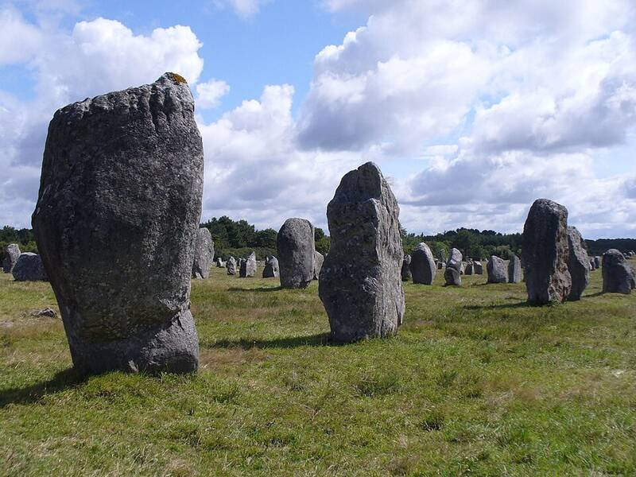

Carnac stones
Brittany, France

More than 3,000 prehistoric standing stones in rows, with dolmens and burial mounds, the largest such collection in the world, raised between about 4500 and 3300 BC. A Christian legend held that the stones were pagan soldiers turned to stone while chasing Pope Cornelius. 1
Open in the interactive Watcher
Sources
- Carnac stones Wikipedia